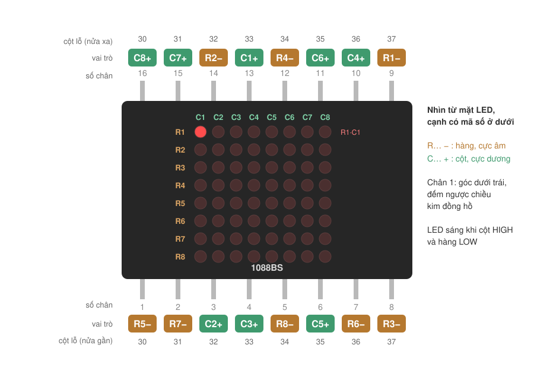

Lab 13 · LED ma trận 8×8 (1088BS)
Lab 13 · LED ma trận 8×8 (1088BS)
Điều khiển ma trận LED 8×8 rời (16 chân) trực tiếp bằng Arduino Uno, không dùng IC điều khiển: thử 1 đèn, chạy điểm sáng qua 64 đèn, vẽ trái tim, chạy chương trình trình diễn (tim đập, mặt cười, mưa rơi, Game of Life) và làm xúc xắc điện tử. Cuối lab có phần cho module MAX7219 nếu kit của bạn là loại đã gắn sẵn IC.
LED ma trận 8×8 là gì
Ma trận 8×8 gồm 64 LED xếp thành 8 hàng × 8 cột trong một khối nhựa. Nếu mỗi LED có chân riêng thì cần 64 + 1 chân; để tiết kiệm, nhà sản xuất nối chung:
- 8 LED cùng hàng chung một cực,
- 8 LED cùng cột chung cực còn lại.
Kết quả là chỉ còn 16 chân: 8 chân hàng + 8 chân cột. Với con 1088BS trong kit (đã thử thực tế), hàng nối cực dương (anode), cột nối cực âm (cathode): LED ở hàng r, cột c sáng khi chân hàng r ở HIGH và chân cột c ở LOW.
C1 C2 C3 ... C8 (chân cột: cực âm)
│ │ │ │
R1 ──────►●────●────●── … ───● ● = 1 LED, anode nối hàng,
│ │ │ │ cathode nối cột
R2 ──────►●────●────●── … ───●
⋮ ⋮ ⋮ ⋮
R8 ──────►●────●────●── … ───●Hậu tố AS / BS không thống nhất giữa các hãng. Có ma trận cùng mã, cùng sơ đồ chân nhưng ngược chiều cực. Vì vậy luôn làm Bước 1 – thử 1 đèn trước; nếu ngược thì chỉ cần đảo 4 dòng #define trong code.
Vì sao phải quét
Với kiểu nối chung này, không thể bật tùy ý nhiều điểm cùng lúc. Ví dụ muốn sáng (R1,C1) và (R2,C2): bật R1, R2, C1, C2 thì (R1,C2) và (R2,C1) cũng sáng theo — ra 4 điểm thay vì 2.
Cách giải: bật lần lượt từng điểm của hình, mỗi điểm khoảng 0,15 ms, rồi lặp lại thật nhanh. Quét hết 64 điểm mất khoảng 10 ms, tức khoảng 100 lần/giây; mắt người không thấy nhấp nháy ở tần số trên ~50 Hz nên thấy cả hình đứng yên. Đây cũng là nguyên lý quét của LED 7 đoạn 4 số ở Lab 7.
Vì sao quét từng đèn, dùng điện trở 220 Ω
Cách quét phổ biến hơn là quét theo hàng: bật cả một hàng, đặt 8 cột theo hình. Nhưng khi cả hàng sáng, một chân hàng phải cấp dòng cho cả 8 LED. Giới hạn của Uno là 40 mA mỗi chân (khuyến nghị ≤ 20 mA). Với LED đỏ (V_f \approx 1{,}8 V):
| Điện trở cột | Dòng 1 LED | Quét theo hàng (8 LED/chân) | Quét từng đèn (1 LED/chân) |
|---|---|---|---|
| 220 Ω | ~14,5 mA | ~116 mA — hỏng chân | ~14,5 mA — an toàn |
| 1 kΩ | ~3,2 mA | ~26 mA — an toàn | ~3,2 mA — rất tối |
Lab này dùng 8 điện trở 220 Ω (vòng đỏ – đỏ – nâu, kit có sẵn nhiều) và quét từng đèn: mỗi thời điểm chỉ một LED sáng, nên dòng qua mọi chân Uno luôn khoảng 14,5 mA. Đánh đổi là mỗi LED chỉ sáng một phần nhỏ thời gian; hình càng ít điểm thì càng sáng.
Không chạy code quét theo hàng với điện trở 220 Ω. Nếu dùng 1 kΩ thì quét theo hàng được, nhưng phải đủ 8 điện trở 1 kΩ.
Linh kiện
| Linh kiện | Số lượng |
|---|---|
| Arduino Uno | 1 |
| LED ma trận 8×8 đỏ 1088BS, 16 chân | 1 |
| Điện trở 220 Ω (đỏ – đỏ – nâu) | 8 |
| Breadboard | 1 (chỉ để cắm điện trở) |
| Dây đực – cái | 16 (từ chân ma trận ra) |
| Dây đực – đực | 8 (từ điện trở về Uno) |
Không cắm ma trận lên breadboard. Thân 1088BS rộng khoảng 32 mm, cắm vắt qua rãnh giữa sẽ che kín cả 5 lỗ mỗi bên, không còn chỗ cắm dây. Thay vào đó, cắm đầu cái của dây đực – cái thẳng vào từng chân ma trận.
Sơ đồ chân và nối dây
Cầm ma trận mặt LED hướng về phía mình, cạnh có in chữ 1088BS ở phía dưới. Chân 1 ở góc dưới bên trái, đánh số ngược chiều kim đồng hồ: 1 → 8 dọc hàng chân dưới từ trái sang phải, 9 → 16 dọc hàng chân trên từ phải sang trái.

Thứ tự hàng/cột không theo quy luật — do cách đi mạch bên trong — nên phải tra bảng, không đoán. Dùng 16 chân Uno: D2–D13 và A0–A3 (chân analog dùng được như chân digital). Chừa D0/D1 cho Serial.
8 dây hàng (R) — cắm thẳng về Uno, không qua điện trở:
| Hàng | Chân ma trận | Vị trí chân (đếm từ trái) | Uno |
|---|---|---|---|
| R1 | 9 | trên, thứ 8 (ngoài cùng phải) | D2 |
| R2 | 14 | trên, thứ 3 | D3 |
| R3 | 8 | dưới, thứ 8 (ngoài cùng phải) | D4 |
| R4 | 12 | trên, thứ 5 | D5 |
| R5 | 1 | dưới, thứ 1 (ngoài cùng trái) | D6 |
| R6 | 7 | dưới, thứ 7 | D7 |
| R7 | 2 | dưới, thứ 2 | D8 |
| R8 | 5 | dưới, thứ 5 | D9 |
8 dây cột (C) — đi qua điện trở 220 Ω:
| Cột | Chân ma trận | Vị trí chân (đếm từ trái) | Uno |
|---|---|---|---|
| C1 | 13 | trên, thứ 4 | 220 Ω → D10 |
| C2 | 3 | dưới, thứ 3 | 220 Ω → D11 |
| C3 | 4 | dưới, thứ 4 | 220 Ω → D12 |
| C4 | 10 | trên, thứ 7 | 220 Ω → D13 |
| C5 | 6 | dưới, thứ 6 | 220 Ω → A0 |
| C6 | 11 | trên, thứ 6 | 220 Ω → A1 |
| C7 | 15 | trên, thứ 2 | 220 Ω → A2 |
| C8 | 16 | trên, thứ 1 (ngoài cùng trái) | 220 Ω → A3 |

Đường đi của mỗi loại dây:
Dây hàng: chân R ──(đực–cái)───────────────────────────────────────► Uno D2…D9
Dây cột: chân C ──(đực–cái)──► [hàng lỗ X] ═ 220 Ω ═ [hàng lỗ Y] ──(đực–đực)──► Uno D10…D13 / A0…A3
└──── breadboard, điện trở vắt qua rãnh giữa ────┘- Mỗi điện trở vắt qua rãnh giữa breadboard. Ở mỗi đầu, dây và chân điện trở phải nằm cùng một hàng 5 lỗ.
- Các điện trở cách nhau ít nhất một hàng lỗ để chân không chạm nhau.
- Mạch không dùng
5V,GND: ma trận lấy điện qua chính các chân D/A. A0–A3ở hàng chân ANALOG IN (mép dưới bên phải Uno), dùng như chân digital.
Lắp từng bước
Không cắm đủ 24 dây rồi mới thử. Mỗi bước chỉ cắm thêm vài dây, nạp code, thấy đúng rồi mới cắm tiếp — khi có lỗi thì biết ngay nằm ở mấy dây vừa cắm. Rút USB mỗi lần cắm thêm dây.
Cả lab dùng chung phần khai báo chân dưới đây. Mảng ROWS[] / COLS[] theo đúng thứ tự R1…R8 và C1…C8:
const byte ROWS[8] = {2, 3, 4, 5, 6, 7, 8, 9}; // R1 → R8
const byte COLS[8] = {10, 11, 12, 13, A0, A1, A2, A3}; // C1 → C8
// 1088BS trong kit: hàng = cực dương, cột = cực âm
// Nếu ma trận của bạn ngược cực, đổi ngược cả bốn dòng dưới.
#define ROW_ON HIGH
#define ROW_OFF LOW
#define COL_ON LOW
#define COL_OFF HIGHBước 1 – thử 1 đèn
Chỉ cắm R1 và C1: 2 dây đực – cái, 1 điện trở, 1 dây đực – đực.
| Dây | Từ | Đến |
|---|---|---|
| R1 | chân 9 (trên, ngoài cùng phải) | D2 |
| C1 | chân 13 (trên, thứ 4 từ trái) | một đầu điện trở 220 Ω |
| — | đầu kia điện trở | D10 |
#define ROW1 2 // R1 (cực dương)
#define COL1 10 // C1 (cực âm), qua 220 Ω
void setup() {
Serial.begin(9600);
pinMode(ROW1, OUTPUT);
pinMode(COL1, OUTPUT);
digitalWrite(ROW1, HIGH); // hàng = cực dương
}
void loop() {
digitalWrite(COL1, LOW); // cột = cực âm → LOW thì sáng
Serial.println("R1 C1: SANG");
delay(500);
digitalWrite(COL1, HIGH);
Serial.println("R1 C1: tat");
delay(500);
}Kết quả đúng: LED góc trên bên trái nhấp nháy mỗi nửa giây.
| Hiện tượng | Nguyên nhân / cách xử lý |
|---|---|
| Serial in đều nhưng không sáng | Ma trận ngược cực: đổi HIGH ↔︎ LOW ở cả hai chân (ROW1 thành LOW, COL1 sáng khi HIGH). Nếu giờ sáng thì đảo 4 dòng #define ở mọi code sau |
| Đổi cực vẫn không sáng | Đầu dây cái chưa ăn vào chân (ấn hết cỡ), hoặc dây và chân điện trở không cùng hàng 5 lỗ |
| Sáng LED khác | Cắm nhầm chân — kiểm tra lại hướng cầm: mặt LED về phía mình, chữ 1088BS ở dưới |
Kiểm tra nhanh không cần code: dây điện trở sang GND, dây chân 9 sang 5V; không sáng thì đổi chiều. Chiều nào sáng thì chân nối 5V là cực dương.
Bước 2 – 2 hàng × 3 cột (6 đèn)
Giữ dây Bước 1, cắm thêm:
| Thêm | Chân ma trận | Nối về Uno |
|---|---|---|
| C2 | 3 (dưới, thứ 3) | 220 Ω → D11 |
| C3 | 4 (dưới, thứ 4) | 220 Ω → D12 |
| R2 | 14 (trên, thứ 3) | thẳng → D3 |
const byte ROWS[] = {2, 3}; // R1, R2 (cực dương)
const byte COLS[] = {10, 11, 12}; // C1, C2, C3 (cực âm, qua 220 Ω)
const byte NR = sizeof(ROWS);
const byte NC = sizeof(COLS);
void allOff() {
for (byte i = 0; i < NR; i++) digitalWrite(ROWS[i], LOW);
for (byte i = 0; i < NC; i++) digitalWrite(COLS[i], HIGH);
}
void setup() {
Serial.begin(9600);
for (byte i = 0; i < NR; i++) pinMode(ROWS[i], OUTPUT);
for (byte i = 0; i < NC; i++) pinMode(COLS[i], OUTPUT);
allOff();
}
void loop() {
for (byte r = 0; r < NR; r++) {
for (byte c = 0; c < NC; c++) {
allOff();
digitalWrite(ROWS[r], HIGH); // bật hàng
digitalWrite(COLS[c], LOW); // bật cột
Serial.print("R"); Serial.print(r + 1);
Serial.print(" C"); Serial.println(c + 1);
delay(500);
}
}
}Kết quả đúng: điểm sáng chạy ① → ⑥, mỗi lúc chỉ một đèn, khớp dòng Serial:
C1 C2 C3
R1 → ① ② ③ (hàng trên cùng)
R2 → ④ ⑤ ⑥ (hàng thứ 2)| Hiện tượng | Nguyên nhân |
|---|---|
Serial in R1 C2 mà không đèn nào sáng |
Dây hoặc điện trở của C2 lỏng / không cùng hàng lỗ |
R1 C2 sáng ở vị trí C3 và ngược lại |
Hai dây D11 và D12 bị đổi chỗ trên Uno |
R2 … sáng ở hàng khác |
Nhầm chân: R2 là chân 14, hàng chân trên, thứ 3 từ trái |
| Đèn sáng lung tung, nhiều đèn cùng lúc | Đang chạy code cũ chỉ khai báo 2 chân — các chân còn lại thả nổi. Nạp đúng code bước này |
Bước 3 – đủ 16 dây
Cắm thêm C4 – C8 (mỗi cột một điện trở 220 Ω), chạy thử, rồi cắm R3 – R8 theo bảng ở phần Sơ đồ chân và nối dây. Hàng nào chưa cắm thì lúc chạy đến hàng đó ma trận chỉ tối. Sau đó chuyển sang Test 1.
Đối chiếu nhanh khi cắm xong:
Hàng chân TRÊN (trái → phải): C8 C7 R2 C1 R4 C6 C4 R1
Uno: A3 A2 D3 D10 D5 A1 D13 D2
Hàng chân DƯỚI (trái → phải): R5 R7 C2 C3 R8 C5 R6 R3
Uno: D6 D8 D11 D12 D9 A0 D7 D4Code
Test 1 – chạy điểm sáng qua 64 đèn
Kiểm tra toàn bộ dây: một điểm sáng chạy từ trái sang phải, trên xuống dưới, qua đủ 64 vị trí.
const byte ROWS[8] = {2, 3, 4, 5, 6, 7, 8, 9}; // R1 → R8
const byte COLS[8] = {10, 11, 12, 13, A0, A1, A2, A3}; // C1 → C8
#define ROW_ON HIGH
#define ROW_OFF LOW
#define COL_ON LOW
#define COL_OFF HIGH
void allOff() {
for (byte i = 0; i < 8; i++) {
digitalWrite(ROWS[i], ROW_OFF);
digitalWrite(COLS[i], COL_OFF);
}
}
void setup() {
Serial.begin(9600);
for (byte i = 0; i < 8; i++) {
pinMode(ROWS[i], OUTPUT);
pinMode(COLS[i], OUTPUT);
}
allOff();
}
void loop() {
for (byte r = 0; r < 8; r++) {
for (byte c = 0; c < 8; c++) {
allOff();
digitalWrite(ROWS[r], ROW_ON);
digitalWrite(COLS[c], COL_ON);
Serial.print("R"); Serial.print(r + 1);
Serial.print(" C"); Serial.println(c + 1);
delay(150);
}
}
}Cách kiểm tra:
- Mỗi dòng
R? C?trên Serial Monitor (9600 baud) tương ứng đúng một LED sáng ở hàng, cột đó. - Sáng sai chỗ: ghi lại dòng Serial và vị trí thật, tra bảng để tìm hai dây bị đổi. Nếu điểm chạy dọc thay vì ngang thì hàng và cột bị đổi vai.
- Một hàng hoặc một cột không bao giờ sáng: dây đó lỏng hoặc chưa cắm.
D13có LEDLtrên board Uno nối song song, nên LEDLnháy theo cột 4 — bình thường.
Mạch thật chạy Test 1: 16 dây đực – cái cắm thẳng vào chân ma trận, ma trận đặt đứng trước breadboard. Điểm sáng chạy lần lượt qua các vị trí; đoạn sau của video quay sang Uno và breadboard có các điện trở vắt qua rãnh giữa.
Test 2 – vẽ hình trái tim
Hình được lưu thành mảng 8 byte, mỗi byte là một hàng, bit 7 là cột 1 (trái), bit 0 là cột 8. Viết ở dạng nhị phân 0b… thì nhìn code thấy luôn hình.
const byte ROWS[8] = {2, 3, 4, 5, 6, 7, 8, 9};
const byte COLS[8] = {10, 11, 12, 13, A0, A1, A2, A3};
#define ROW_ON HIGH
#define ROW_OFF LOW
#define COL_ON LOW
#define COL_OFF HIGH
const byte HEART[8] = {
0b00000000,
0b01100110,
0b11111111,
0b11111111,
0b01111110,
0b00111100,
0b00011000,
0b00000000,
};
void setup() {
for (byte i = 0; i < 8; i++) {
pinMode(ROWS[i], OUTPUT);
pinMode(COLS[i], OUTPUT);
digitalWrite(ROWS[i], ROW_OFF);
digitalWrite(COLS[i], COL_OFF);
}
}
// Quét từng đèn: mỗi lúc chỉ 1 LED sáng → dòng mỗi chân ~14,5 mA, an toàn với 220 Ω
void drawFrame(const byte img[8]) {
for (byte r = 0; r < 8; r++) {
digitalWrite(ROWS[r], ROW_ON);
for (byte c = 0; c < 8; c++) {
if (img[r] & (0x80 >> c)) { // bit 7 = cột 1
digitalWrite(COLS[c], COL_ON);
delayMicroseconds(150);
digitalWrite(COLS[c], COL_OFF);
}
}
digitalWrite(ROWS[r], ROW_OFF);
}
}
void loop() {
drawFrame(HEART);
}Giải thích:
drawFramechỉ bật những điểm có bit1, mỗi điểm 150 µs rồi tắt. Hình trái tim có 36 điểm nên một khung mất khoảng 5,4 ms, tức gần 200 khung mỗi giây.loop()phải gọidrawFrameliên tục. Thêm mộtdelay(500)vàoloop()là hình tắt ngay — ma trận không tự nhớ hình, CPU phải vẽ lại liên tục.- Hình nhấp nháy thì giảm
delayMicroseconds(150)xuống100; muốn sáng hơn thì tăng lên250(tăng quá sẽ bắt đầu thấy nháy). - Tự vẽ hình khác: sửa các số
0b…, mỗi số1là một điểm sáng.
Trái tim hiện đứng yên, không nhấp nháy, dù thực ra mỗi lúc chỉ có một LED sáng.
Test 3 – chương trình trình diễn
Bốn hiệu ứng chạy lần lượt rồi lặp lại: tim đập, mặt cười nháy mắt, mưa rơi và Game of Life. Hàm show(img, ms) giữ một hình trên ma trận trong ms mili giây bằng cách gọi drawFrame liên tục — thay cho delay(), vốn làm tắt hình.
const byte ROWS[8] = {2, 3, 4, 5, 6, 7, 8, 9};
const byte COLS[8] = {10, 11, 12, 13, A0, A1, A2, A3};
#define ROW_ON HIGH
#define ROW_OFF LOW
#define COL_ON LOW
#define COL_OFF HIGH
// ----- Các hình (mỗi byte = 1 hàng, bit 7 = cột 1) -----
const byte HEART_BIG[8] = {0x00,0x66,0xFF,0xFF,0x7E,0x3C,0x18,0x00};
const byte HEART_SMALL[8] = {0x00,0x00,0x24,0x7E,0x3C,0x18,0x00,0x00};
const byte SMILE[8] = {0x3C,0x42,0xA5,0x81,0xA5,0x99,0x42,0x3C};
const byte WINK[8] = {0x3C,0x42,0xB5,0x81,0xA5,0x99,0x42,0x3C};
byte frame[8]; // hình thay đổi được (mưa, Game of Life)
// Quét từng đèn: mỗi lúc chỉ 1 LED sáng → an toàn với 220 Ω
void drawFrame(const byte img[8]) {
for (byte r = 0; r < 8; r++) {
digitalWrite(ROWS[r], ROW_ON);
for (byte c = 0; c < 8; c++) {
if (img[r] & (0x80 >> c)) {
digitalWrite(COLS[c], COL_ON);
delayMicroseconds(150);
digitalWrite(COLS[c], COL_OFF);
}
}
digitalWrite(ROWS[r], ROW_OFF);
}
}
// Giữ một hình trên ma trận trong ms mili giây
void show(const byte img[8], unsigned int ms) {
unsigned long t0 = millis();
while (millis() - t0 < ms) drawFrame(img);
}
// ----- Game of Life: mỗi ô sống/chết theo số hàng xóm -----
byte cell(const byte g[8], int r, int c) {
r = (r + 8) % 8; c = (c + 8) % 8; // tràn mép thì vòng sang mép kia
return (g[r] >> (7 - c)) & 1;
}
void lifeStep(byte g[8]) {
byte next[8] = {0};
for (int r = 0; r < 8; r++) {
for (int c = 0; c < 8; c++) {
byte n = 0;
for (int dr = -1; dr <= 1; dr++)
for (int dc = -1; dc <= 1; dc++)
if (dr || dc) n += cell(g, r + dr, c + dc);
bool alive = cell(g, r, c);
if (n == 3 || (alive && n == 2)) next[r] |= 0x80 >> c;
}
}
memcpy(g, next, 8);
}
void setup() {
for (byte i = 0; i < 8; i++) {
pinMode(ROWS[i], OUTPUT);
pinMode(COLS[i], OUTPUT);
digitalWrite(ROWS[i], ROW_OFF);
digitalWrite(COLS[i], COL_OFF);
}
randomSeed(analogRead(A5)); // A5 để trống → số ngẫu nhiên mỗi lần chạy khác nhau
}
void loop() {
// 1. Tim đập
for (byte i = 0; i < 4; i++) {
show(HEART_BIG, 300);
show(HEART_SMALL, 200);
}
// 2. Mặt cười nháy mắt
for (byte i = 0; i < 3; i++) {
show(SMILE, 900);
show(WINK, 250);
}
// 3. Mưa rơi
memset(frame, 0, 8);
for (int i = 0; i < 60; i++) {
for (int r = 7; r > 0; r--) frame[r] = frame[r - 1]; // dịch xuống 1 hàng
frame[0] = 0;
for (byte c = 0; c < 8; c++)
if (random(6) == 0) frame[0] |= 0x80 >> c; // giọt mưa mới ở hàng trên
show(frame, 80);
}
// 4. Game of Life
for (byte r = 0; r < 8; r++) frame[r] = random(256);
for (int g = 0; g < 60; g++) {
show(frame, 150);
lifeStep(frame);
}
}Giải thích:
- Mưa rơi: mỗi bước dịch cả hình xuống một hàng, hàng trên cùng sinh giọt mới ngẫu nhiên (mỗi cột 1/6 cơ hội).
- Game of Life (John Conway): mỗi đèn là một tế bào. Tế bào sống còn sống nếu có 2–3 hàng xóm sống; ô trống sinh tế bào mới nếu có đúng 3 hàng xóm sống. Từ một hình ngẫu nhiên, các đám đèn tự lớn lên, chết đi hoặc bò quanh ma trận. Mép trên nối với mép dưới, mép trái nối với mép phải.
randomSeed(analogRead(A5)):A5không nối gì nên đọc ra nhiễu ngẫu nhiên — mỗi lần bật, mưa và Game of Life khác nhau.
Ma trận được dựng trên đầu một joystick (chỉ làm giá đỡ, không nối dây). Lần lượt thấy trái tim đập to – nhỏ, mặt cười nháy mắt trái, rồi mưa rơi và các đám đèn của Game of Life.
Test 4 – xúc xắc điện tử
Không cần nút nhấn: gõ một ký tự bất kỳ trong Serial Monitor rồi nhấn Enter để lắc, hoặc chờ 5 giây để xúc xắc tự lắc.
const byte ROWS[8] = {2, 3, 4, 5, 6, 7, 8, 9}; // R1 → R8
const byte COLS[8] = {10, 11, 12, 13, A0, A1, A2, A3}; // C1 → C8
#define ROW_ON HIGH
#define ROW_OFF LOW
#define COL_ON LOW
#define COL_OFF HIGH
#define AUTO_MS 5000 // tự lắc sau mỗi 5 giây
const byte DICE[6][8] = {
{0x00,0x00,0x00,0x18,0x18,0x00,0x00,0x00}, // 1
{0x60,0x60,0x00,0x00,0x00,0x00,0x06,0x06}, // 2
{0x60,0x60,0x00,0x18,0x18,0x00,0x06,0x06}, // 3
{0x66,0x66,0x00,0x00,0x00,0x00,0x66,0x66}, // 4
{0x66,0x66,0x00,0x18,0x18,0x00,0x66,0x66}, // 5
{0x66,0x66,0x00,0x66,0x66,0x00,0x66,0x66}, // 6
};
byte face = 0;
unsigned long lastRoll = 0;
// Quét từng đèn: mỗi lúc chỉ 1 LED sáng → an toàn với 220 Ω
void drawFrame(const byte img[8]) {
for (byte r = 0; r < 8; r++) {
digitalWrite(ROWS[r], ROW_ON);
for (byte c = 0; c < 8; c++) {
if (img[r] & (0x80 >> c)) {
digitalWrite(COLS[c], COL_ON);
delayMicroseconds(150);
digitalWrite(COLS[c], COL_OFF);
}
}
digitalWrite(ROWS[r], ROW_OFF);
}
}
// Giữ một hình trên ma trận trong ms mili giây
void show(const byte img[8], unsigned int ms) {
unsigned long t0 = millis();
while (millis() - t0 < ms) drawFrame(img);
}
void roll() {
for (byte i = 0; i < 12; i++) { // hiệu ứng đang lăn, chậm dần
show(DICE[random(6)], 40 + i * 15);
}
face = random(6);
Serial.print("Ket qua: ");
Serial.println(face + 1);
lastRoll = millis();
}
void setup() {
Serial.begin(9600);
for (byte i = 0; i < 8; i++) {
pinMode(ROWS[i], OUTPUT);
pinMode(COLS[i], OUTPUT);
digitalWrite(ROWS[i], ROW_OFF);
digitalWrite(COLS[i], COL_OFF);
}
randomSeed(analogRead(A5));
Serial.println("Go phim bat ky + Enter de lac xuc xac");
}
void loop() {
if (Serial.available()) { // có ký tự gửi từ Serial Monitor
while (Serial.available()) Serial.read(); // đọc bỏ hết
roll();
} else if (millis() - lastRoll >= AUTO_MS) {
roll();
}
drawFrame(DICE[face]);
}Cách chơi:
- Nạp code, mở Serial Monitor ở 9600 baud.
- Gõ một ký tự (ví dụ
a) vào ô Message, nhấn Enter: ma trận đổi mặt liên tục, chậm dần rồi dừng; Serial inKet qua: …khớp số chấm trên ma trận. - Không gõ gì thì 5 giây sau xúc xắc tự lắc. Sửa
AUTO_MSđể đổi khoảng thời gian; muốn chỉ lắc khi gõ phím thì xoá nhánhelse if (...) { roll(); }.
Mỗi chấm xúc xắc là một khối 2×2 LED, đặt ở các vị trí góc / giữa của lưới 8×8.
Ma trận hiện mặt 1: một khối 2×2 LED ở giữa lưới.
Module MAX7219
Nhiều kit bán ma trận 8×8 gắn sẵn trên một bo mạch có IC MAX7219 (bo xanh, 5 chân VCC GND DIN CS CLK ở mỗi đầu). Khi đó toàn bộ phần quét, điện trở, giới hạn dòng đã nằm trong IC:
| Lái trực tiếp (lab trên) | Module MAX7219 | |
|---|---|---|
| Số chân Uno dùng | 16 | 3 |
| Điện trở ngoài | 8 cái | Không (1 điện trở ISET trên bo) |
| CPU phải quét liên tục | Có — delay() làm tắt hình |
Không — IC tự quét, Uno chỉ gửi hình 1 lần |
| Độ sáng | Tối dần khi hình nhiều điểm | Sáng, chỉnh được 16 mức bằng lệnh |
| Ghép nhiều ma trận | Hết chân | Nối tiếp DOUT → DIN, vẫn 3 chân |
Đây là cùng ý tưởng với IC 74HC595 ở Lab 7 — dùng giao tiếp nối tiếp để giảm số chân — nhưng MAX7219 còn tự làm luôn việc quét và giới hạn dòng.
Nối dây:
| Module | Uno |
|---|---|
VCC |
5V |
GND |
GND |
DIN |
D12 |
CS |
D10 |
CLK |
D11 |
Cài thư viện LedControl (Eberhard Fahle) trong Library Manager, rồi nạp:
#include <LedControl.h>
// LedControl(DIN, CLK, CS, số module)
LedControl lc(12, 11, 10, 1);
const byte HEART[8] = {
0b00000000,
0b01100110,
0b11111111,
0b11111111,
0b01111110,
0b00111100,
0b00011000,
0b00000000,
};
void setup() {
lc.shutdown(0, false); // MAX7219 khởi động ở chế độ ngủ, phải đánh thức
lc.setIntensity(0, 4); // độ sáng 0–15
lc.clearDisplay(0);
for (byte r = 0; r < 8; r++) {
lc.setRow(0, r, HEART[r]);
}
}
void loop() {
// Không cần làm gì: MAX7219 tự giữ và tự quét hình
}Mảng HEART y hệt Test 2 — chỉ khác là gửi một lần trong setup() rồi thôi. Nếu hình bị xoay hoặc lật gương (tùy cách hàn ma trận lên bo), dùng lc.setColumn() thay cho setRow() hoặc đảo bit. Phần này chưa thử trên phần cứng thật vì kit dùng ma trận rời.
Lỗi hay gặp
| Hiện tượng | Nguyên nhân / cách xử lý |
|---|---|
| Ma trận che kín breadboard, không cắm được dây | Không cắm ma trận lên breadboard — dùng dây đực – cái cắm thẳng vào chân |
| Code chạy (Serial in đều) nhưng không LED nào sáng | Ma trận ngược cực so với code — đảo ROW_ON/OFF và COL_ON/OFF |
| Sáng sai đèn ở bài thử 1 đèn | Cầm ma trận sai hướng hoặc đếm chân từ mặt sau — mặt LED về phía mình, chữ 1088BS ở dưới |
| Điểm chạy dọc thay vì ngang | Hàng và cột bị đổi vai — tráo mảng ROWS ↔︎ COLS và đảo cực |
| Một hàng/cột luôn tắt | Đầu dây cái lỏng, hoặc dây và chân điện trở không cùng hàng 5 lỗ |
| Nhiều đèn sáng lung tung | Code không khai báo đủ chân, các chân còn lại thả nổi — dùng code khai báo cả 16 chân |
| Hình tắt hoặc nhấp nháy khi thêm code | Có delay() trong loop() — dùng show(img, ms) thay cho delay() |
| Hình tối, nhất là hình nhiều điểm | Bình thường khi quét từng đèn; tăng delayMicroseconds một chút, hoặc dùng MAX7219 |
| Uno nóng / reset | Đang chạy code quét theo hàng với điện trở 220 Ω — chỉ dùng drawFrame quét từng đèn trong lab này |